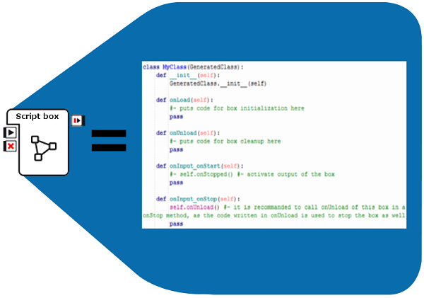
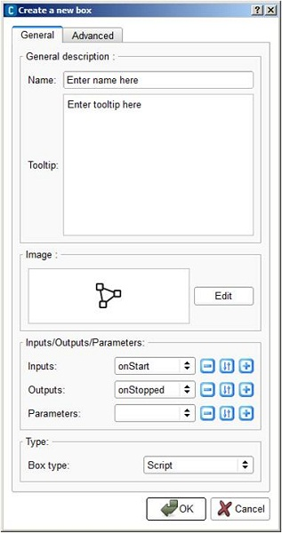
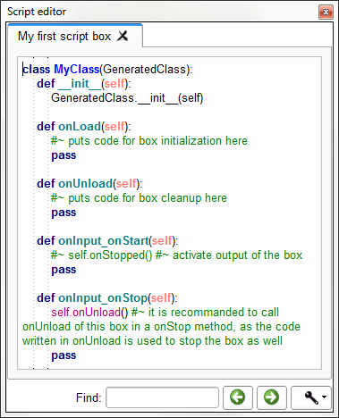

Script box¶
What is a Script box¶
A Script box is a box which only includes a script.
It has no offspring: neither Flow diagram, nor Timeline.
How to create a Script box¶
To create a Script box:
| Step | Action |
|---|---|
Right click your Flow diagram wherever you want to create the box and choose Add a new Box in the context menu. The Create a new box window is displayed.  |
|
| Define a Name and a Tooltip for your box. | |
| Optional: set the picture to recognize it among other boxes in your diagram. | |
Optional: set parameters, inputs and outputs that can be manipulated by the box. For further details about parameters, see How to add/remove inputs, outputs, parameters in a box section. |
|
| In the box type part, select Script. | |
Click the OK button. The created Script box is displayed on the diagram. |
|
Double click on your box. The Script editor is opened and displays the script of the box. The structure of the script is automatically generated and should look like that:  |
Script of a box¶
Each box has a corresponding script.
This script is in Python. And as in any usual Python script, you can import any Python module and use any Python function.
To know how to do so, see the section: How to import python module in a script box.
For further details about Python, see the official website: http://www.python.org.
By default, when you create a box its script looks as follows:
class MyClass(GeneratedClass):
def __init__(self):
GeneratedClass.__init__(self)
def onLoad(self):
#~ puts code for box initialization here
pass
def onUnload(self):
#~ puts code for box cleanup here
pass
def onInput_onStart(self):
#~ self.onStopped() #~ activate output of the box
pass
def onInput_onStop(self):
self.onUnload() #~ it is recommended to call onUnload of this box in a onStop method, as the code written in onUnload is used to stop the box as well
pass
You can see above that a box script defines a class named MyClass. This class inherits from GeneratedClass. And MyClass has already some methods defined by default.
In fact MyClass is the class representing the box.
GeneratedClass is a class which is automatically generated at the execution of the behavior. It includes all the needed information concerning the box (inputs, outputs, parameters, etc). It also defines all the additional built-in functions of the box script which could be useful for you to use in the script.
The fact that MyClass inherits from GeneratedClass makes possible for you to use all these built-in functions in the script.
Moreover, as you can edit MyClass, you can add your own functions.
Built-in functions in the script of a box¶
In the script of a box, there are many available methods:
Those corresponding to the inputs of the box. They need to be defined in the script with the following syntax: onInput_<input-name>.
Each time an input is stimulated, this method will be called.
For example, if an input is named myInput and is a Bang, the following lines are to define its corresponding method:
def onInput_myInput(self): # The code of my method pass
If myInput is a Number, the following lines are to define its corresponding method:
def onInput_myInput(self, number): # The code of my method pass
Then the argument number is the value of the signal sent on the input.
If myInput is a Dynamic and it can be stimulated with a Number or just a Bang, you can use the following lines:
def onInput_myInput(self, number = None): # The code of my method pass
Then the argument number is the value of the signal sent on the input and is equal to None if it is stimulated with a Bang.
Those corresponding to the outputs of the box. They are not present in the script but are already defined with the following syntax: <output-name>.
Each time a method corresponding to an output is called, the output is stimulated.
For example, if an output is named myOutput and is a Bang, the following line enables you to stimulate the output:
self.myOutput()
If myOutput is a Number, the following lines enables you to stimulate the output with the value of myNumber:
myNumber = 3 self.myOutput(myNumber)
Get parameter function which enables you to get the value of any parameter of the box.
For example, if the box has a parameter named My parameter, the command to get the value of this parameter will be:
value = self.getParameter("My parameter")
This function will throw an exception if no such parameter exists.
Those which enables you to affect the timeline or the flow diagram <choregraphe-reference-box-flow-diagram> of the box from its script. They are called Frame Manager functions and are gathered in the following table:
Frame Manager functions Function
Description
self.playTimeline()
Play the timeline of the box (if any) from the current frame.
If the timeline is not loaded yet (so there is no current frame), it is played from the start frame of the timeline.
self.stopTimeline()
Pause the timeline of the box (if any) at the current frame.
If the timeline is not loaded yet, it does not do anything.
self.gotoAndPlay(p)
Go to the frame p, and play the timeline of the box (if any) from this frame.
self.gotoAndStop(p)
Go to the frame p, and pause the timeline of the box (if any) at this frame.
self.playTimelineParent()
Play the timeline of the parent box (if any) from the current frame.
If the timeline is not loaded yet (so there is no current frame), it is played from the start frame.
self.stopTimelineParent()
Pause the timeline of the parent box (if any) at the current frame.
If the timeline is not loaded yet, it does not do anything.
self.gotoAndPlayParent(p)
Go to the frame p, and play the timeline of the parent box (if any) from this frame.
self.gotoAndStopParent(p)
Go to the frame p, and pause the timeline of the parent box (if any) at this frame.
Note
Here the argument p can be an int and then corresponds to the number of the frame.
p can also be a string and then corresponds to the name of the behavior keyframe the timeline is going to go to. If there is no keyframe with this name, it goes to the start frame of the timeline.
If p is something else (a float for example), the concerned function does not do anything.
Those which are automatically called when the box is loaded or unloaded.
onLoad is called when the box is loaded. It is defined as follows:
def onLoad(self): # The code of my method pass
onUnload is called when it is unloaded. It is defined as follows:
def onUnload(self): # The code of my method pass
It is advised to call onUnload in the code of the methods corresponding to the onStop inputs so that the box is reinitialized when it is stopped.
onResource which is called when the resources of the box are set to Callback on demand and the resources are asked by another box.
You need to define this function for it to be called. The following lines enable you to define it:
def onResource(self, resource): # The code of my method pass
The argument resource corresponds to the name of the resource asked.
onResourceError which is called if the resources are not available when you start the box.
You need to define this function for it to be called. The following lines enable you to define it:
def onResourceError(self): # The code of my method pass
onResourceLost which is called when the resources of the box are set to Stop on demand and if the resources are asked by another box.
You need to define this function for it to be called. The following lines enable you to define it:
def onResourceLost(self): # The code of my method pass
ALProxy which enables you to create a proxy on a NAOqi module and then use easily any method of this module.
For example, if you want to create a proxy on ALLeds and use the rasta method, then you can use the following lines in your function:
leds = ALProxy("ALLeds") leds.rasta()
Those which enables you to print messages in the Debug window.
Indeed you may have noticed that you cannot print anything in the Debug window using the classic print statement in a box script. To do so, you need to use specific commands detailed below instead:
Log functions Function
Description
self.log("my message")
Message with an info level of severity.
self.logger.fatal("my message")
Message with a fatal level of severity.
self.logger.error("my message")
Message with an error level of severity.
self.logger.warning("my message")
Message with a warning level of severity.
self.logger.info("my message")
Message with an info level of severity.
self.logger.debug("my message")
Message with a debug level of severity.
For example, something like:
def onInput_onStart(self): self.log("This is an info message") self.logger.fatal("This is a fatal message") self.logger.error("This is an error message") self.logger.warning("This is a warning message") self.logger.info("This is an other info message") self.logger.debug("This is a debug message")
displays in the Debug window:

How to import python module in a script box¶
If you want to do special treatments on data you will need to import some python modules such as math or string.
This is done by the import instruction on top of the script code.
Here is a code sample that shows how to import math module:
import math #Import the math module
class MyClass(GeneratedClass):
def __init__(self):
GeneratedClass.__init__(self)
def onLoad(self):
#~ puts code for box initialization here
pass
def onUnload(self):
#~ puts code for box cleanup here
pass
def onInput_onStart(self):
self.tan = math.tan(p)
self.onStopped(self.tan)
pass
def onInput_onStop(self):
self.onUnload() #~ it is recommended to call onUnload of this box in a onStop method, as the code written in onUnload is used to stop the box as well
pass